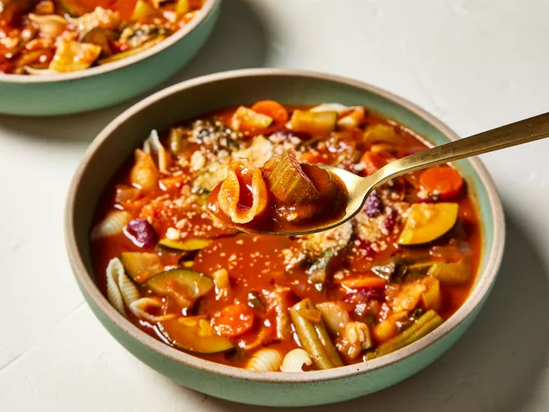

Minestrone Soup

Description
Minestrone is a hearty italian vegetable soupe made with
tomato-y broth and pasta.
Ingredients
- 3 tablespoons olive oil
- 3 cloves garlic, chopped
- 2 onions, chopped
- 2 cups chopped celery
- 5 carrots, sliced
- 4 cups tomato sauce
- 2 cups chicken broth
- 2 cups water
- ½ cup red wine (Optional)
- 3 zucchinis, quartered and sliced
- 2 cups baby spinach, rinsed
- 1 cup canned kidney beans, drained
- salt and pepper to taste
- ½ cup seashell pasta
Directions
- Gather the ingredients.
- Heat olive oil in a large stockpot over medium-low heat.
Sauté garlic in hot oil until fragrant, 2 to 3 minutes.
Add onion; cook and stir until translucent, 4 to 5 minutes.
- Add celery and carrots; sauté for 1 to 2 minutes.
- Pour in tomato sauce, broth, and water; bring to a boil, stirring frequently.
Add red wine; reduce heat to low.
- Meanwhile, fill a medium saucepan with water and bring to a boil.
Cook seashell pasta in boiling water, stirring occasionally,
until tender yet firm to the bite, 7 to 8 minutes.
Drain and set aside.
- Place 2 tablespoons cooked pasta into individual serving bowls.
Ladle soup over pasta and sprinkle with Parmesan cheese.
- Drizzle with olive oil to serve.